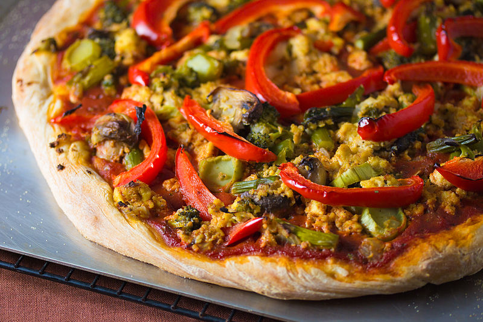

Vegan Pizza

How can you tell a pizza is vegan?
Starting off this wonderful recipe with one of our favorite jokes. At this point
I suppose I have to talk about a story about me and pizza and how it's changed
my file because most recipes on the internet seems to do so. But who I am to bore
you with such details!
There's nothing special about a vegan pizza except it lacks cheese & any other
animal products. The main problem with vegan cheese alternatives is that they are
really location dependent. That's why I won't go into details about brands. Any of
them will do. You probably don't want to use too much of it though.
Ingredients
- Flour (High Protein Type 00) | 500 gr
- Water | 325 gr
- Salt | 15 gr
- Dry Yeast | 0.3 gr
- Tomato Sauce | 250 gr
- Olive Oil | 50 gr (oven dependant)
- Vegan Cheese (optional) | 180 gr
- Your topping of choice (optional)
Steps
- Add the salt to the water and mix about 50 grams of flour to protect the yeast from salt in the next step.
- Mix in the yeast. Let it rest about 15 minutes.
- If ypur oven can't reach 400-500 °C, it's important to add some olive oil to the dough to keep it from drying during baking.
- Add the remaining flour, mix with a spoon until you can't.
- Knead the dough for about 15 minutes.
- Let the dough rest about 24h.
- Preheat the oven.
- Shape the dough with your hands.
- Add some homemade tomato sauce. If you don't know how to prepare it, you can use canned tomatoes or
search online for a recipe.
- All the toppings go on top and the pizza goes into the oven. If the oven reaches a maximum temperature of 250 °C it'll need about 10 minutes.